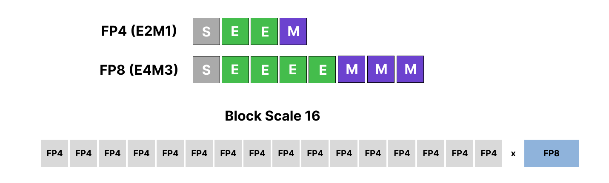
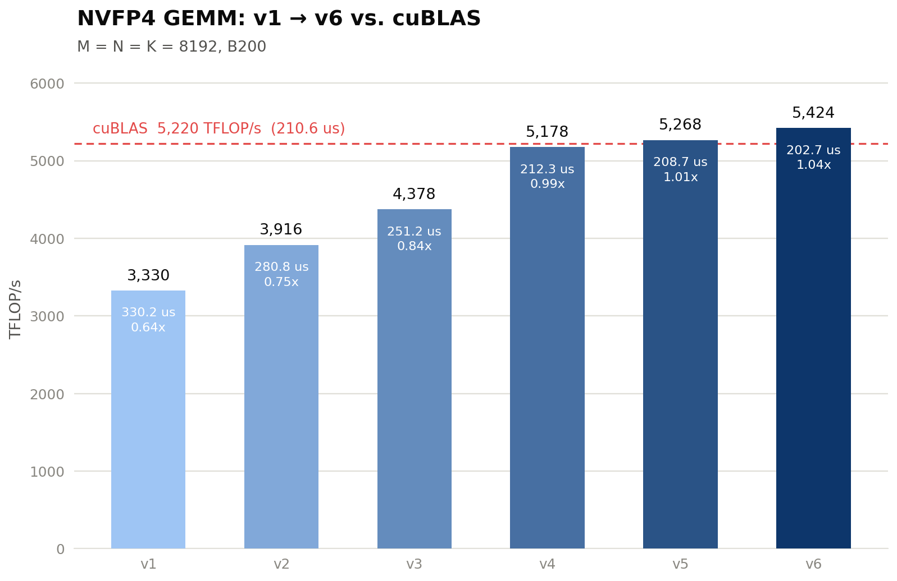
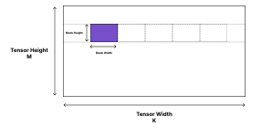
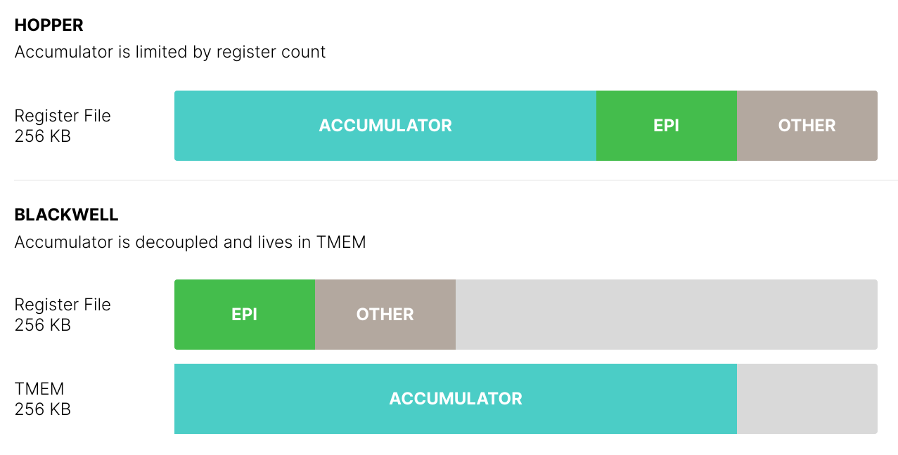
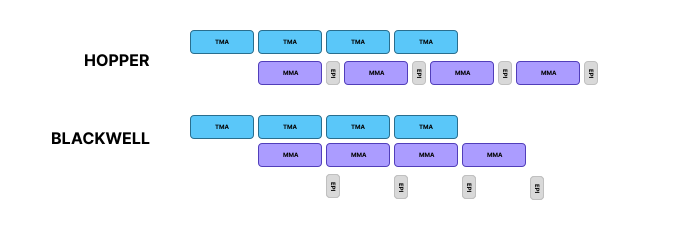
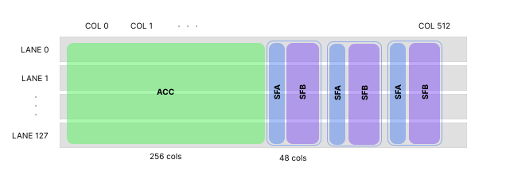
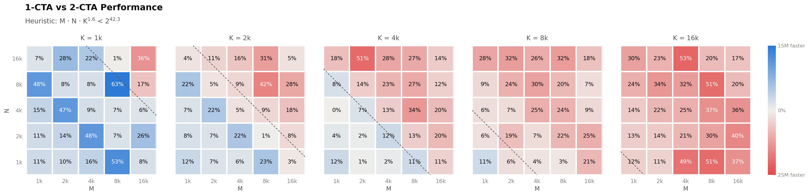
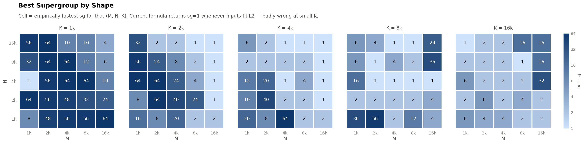

NVFP4 GEMM on Blackwell
NVFP4 GEMM multiplies two matrices stored in NVIDIA’s 4-bit floating-point format using block-level scaling.
| A ∈ ℝM×K | NVFP4 E2M1 |
| B ∈ ℝK×N | NVFP4 E2M1 |
| SA, SB | FP8 E4M3, 1 per 16 values |
| C ∈ ℝM×N | BF16 |
NVFP4 Datatype
NVFP4 uses the E2M1 format: 1 sign bit, 2 exponent bits, and 1 mantissa bit. This gives 16 representable values: ±0, ±0.5, ±1, ±1.5, ±2, ±3, ±4, ±6. Every 16 FP4 value has an FP8 scale factor to increase the accuracy and range when quantizing the values.

Performance

The blogpost will assume you have a basic understanding of NVIDIA GPU architecture. Here are some good resources to learn some basics:
Kernel 1
3330 TFLOP/s (0.64× cuBLAS)
Tensor Memory Accelerator (TMA)

TMA descriptor encodes layout related to the whole tensor and section transferred. For GEMM, we iterate through the K column through some block size. Depicted is the matrix A (M x K) and how it is iterated through for a particular output tile.
The Ampere architecture introduced asynchronous copy (cp.async), allowing overlap between memory transfer and compute. Every thread had to calculate the address of their own memory access before issuing an asynchronous copy, resulting in register pressure and demand on the CUDA cores.
int tid = threadIdx.x;
// Each thread computes its addresses.
float* g_ptr = gmem + blockIdx.x * blockDim.x * 4 + tid * 4;
uint32_t s_addr = __cvta_generic_to_shared(smem + tid * 4);
// Each thread issues cp.async
asm volatile(
"cp.async.ca.shared.global [%0], [%1], 16;"
:: "r"(s_addr), "l"(g_ptr)
);Ampere's asynchronous copy
Since data is often accessed as a multi-dimensional array with a non-sequential access pattern, like a tile in a larger matrix, Tensor Memory Accelerator (TMA) was introduced in the Hopper architecture to compute the address generation with a specialized hardware unit that handles different shapes, strides, and swizzling modes, bypassing the registers directly.
TMA is called with cp.async.bulk.tensor, which initiates the asynchronous copy from global memory to shared memory or vice versa. The PTX instruction requires a CUtensorMap object which encodes the memory layout, the tile layout, swizzling, and other characteristics. It is created on the host with cuTensorMapEncodeTiled. This object is passed on the device with cp.async.bulk.tensor along with the coordinate of the tile needed for transfer.
// Host: encode the tile's shape, strides, and swizzling once.
CUtensorMap tensor_map{};
cuTensorMapEncodeTiled(
&tensor_map, CU_TENSOR_MAP_DATA_TYPE_FLOAT16,
2, gmem_ptr, gmem_dims, gmem_strides,
tile_dims, tile_strides,
CU_TENSOR_MAP_INTERLEAVE_NONE,
CU_TENSOR_MAP_SWIZZLE_128B,
CU_TENSOR_MAP_L2_PROMOTION_L2_256B,
CU_TENSOR_MAP_FLOAT_OOB_FILL_NONE);
// Device: one thread issues the copy for the whole CTA.
if (threadIdx.x == 0) {
asm volatile(
"cp.async.bulk.tensor.2d.shared::cluster.global.mbarrier::complete_tx::bytes"
" [%0], [%1, {%2, %3}], [%4];"
:: "r"(s_addr), "l"(&tensor_map),
"r"(tile_x), "r"(tile_y), "r"(mbar_addr)
);
}TMA bulk tensor copy
The general rule of thumb is to use cp.async for smaller, irregular memory patterns or for 1D linear array copies, and TMA for bulk multi-dimensional tile movement. For GEMM, we will use TMA.
Note: Semianalysis found empirically TMA has higher throughput when more than 32 KiB are in-flight for Blackwell.
Tensor Cores and Tensor Memory
Tensor cores perform matrix multiply-accumulate operations much more efficiently than cuda cores. In Blackwell, the key change from Hopper is that tcgen05.mma writes accumulators into Tensor Memory, or TMEM, instead of keeping the accumulator fragments in per-thread registers. A/B resides in SMEM, SFA/SFB resides in TMEM, and the accumulated results remains in TMEM.
TMEM was introduced in Blackwell for two reasons:
- Reducing register pressure
- Decoupling the tensor-core accumulator state from the threads that issue the MMA.

In Hopper, WGMMA accumulators live in registers and the instruction is issued by a warpgroup of 4 warps. For the large Hopper shape m64n256k16, the accumulator tile has \(64\times256=16384\) FP32 elements. Distributed over 128 threads, this is \(16384/128=128\) FP32 accumulator registers per thread for just the MMA itself.

This makes larger MMA tiles register-limited. A hypothetical register-resident m128n256 accumulator would require 128×256/128=256 FP32 accumulator registers per thread, already exceeding the per-thread register budget. Blackwell avoids this by placing the accumulator in TMEM. The MMA can be issued by a single elected thread/CTA path, while the completed accumulator is later loaded from TMEM into registers for the epilogue and stored to GMEM. This enables larger tensor-core tiles and cleaner overlap between the mainloop and epilogue/pipeline work.

Tensor Memory is organized as a two-dimensional matrix, with 512 columns and 128 lanes of 32-bit cells per CTA. The FP32 accumulator occupies columns [0, 256) and the five buffers for SFA/SFB occupies the rest. A buffer of scale factors take 48 columns, 16 for SFA and 32 for SFB, for an output tile size of 128 x 256
For NVFP4 MMA, the A and B tile along with their scale factors SFA and SFB are required for the tensor core. Specifically, A and B can reside in SMEM while SFA and SFB must reside in TMEM. Colfax's article on Blackwell block-scaling covers this layout in depth.
Moving SFA and SFB into TMEM is done with tcgen05.cp, which copies data asynchronously from shared memory to Tensor Memory. For block-scaled tcgen05.mma, scale_A and scale_B reside in TMEM.
For our scale-factor copy path, we use:
tcgen05.cp.cta_group.shape{.multicast}{.dst_fmt.src_fmt} [taddr], s-desc;
.cta_group = { .cta_group::1, .cta_group::2 }
.src_fmt = { .b6x16_p32 , .b4x16_p64 }
.dst_fmt = { .b8x16 }
.shape = { .128x256b, .4x256b, .128x128b, .64x128b**, .32x128b*** }
.multicast = { .warpx2::02_13** , .warpx2::01_23**, .warpx4*** }The .32x128b shape means the copy covers 32 Tensor Memory lanes, with 128 bits of data across the TMEM columns. NVIDIA requires .32x128b copies to use .warpx4; this multicasts the copied data into all four warps.
This is needed because block-scaled MMA consumes the scale factors from TMEM, and the scale factors for A and B must be duplicated across the TMEM lane partitions used by the MMA. Using .warpx4 performs this duplication with one multicast copy instead of issuing separate copies per warp. The size is sufficient for the largest MMA tile sizes.
Warp Specialization
We have asynchronous instructions so we can create a software pipeline. A thread block is composed of many warps, groups of 32 threads that execute the code in a Single-Instruction Multiple-Threads (SIMT) paradigm, where each thread executes the same instructions. Since all threads in a warp execute the same instructions, if there is a branch, threads that fail to pass the predicate will be masked off, often called warp divergence.
To maximize utilization, we generally minimize warp divergence. When constructing this software pipeline, we will do so at the granularity of warps in a process called warp specialization, where each warp gets a role. For NVFP4 GEMM, it will look like the following:
if (warp == TILE TMA WARP) {
Issue TMA COPY for A, B (GMEM -> SMEM)
}
if (warp == SCALING TMA WARP) {
Issue TMA COPY for SFA, SFB (GMEM -> SMEM)
}
else if (warp == MMA WARP) {
Copy SFA, SFB (SMEM -> TMEM)
Issue MMA
}
else if (warp == EPILOGUE WARP) {
Copy output (TMEM -> GMEM)
}For reasons we will see later, we will have a warp handle TMA for A/B and SFA/SFB separately. For Blackwell, we are able to separate the MMA WARP and EPILOGUE WARP because Tensor Memory allows us to decouple the two, so we can have part of the epilogue's work overlap with the next MMA call.
Memory Barriers
Memory barriers allows us to construct this software pipeline. An mbarrier object is used to synchronize threads and track asynchronous memory operations. A set of threads will wait on a barrier. A different set of threads will arrive at the barrier and signal its completion. The waiting set will then be able to proceed through its computation.
We can track whether the mbarrier is ready through a phase bit. An mbarrier is initialized at phase 0. A set of threads will wait on phase 0. Another set of threads will arrive at this barrier and increment the phase counter to phase 1. The waiting set will then see the phase has flipped to 1 and proceed. We explicitly tell the threads what phase to wait on. After this, we tell the thread to wait on phase 1, which will then get flipped to phase 0 on arrival.
There are two mechanisms to arrive at a barrier. The first is a set of threads signals their arrivals. The second is a set of threads indicate a certain number of bytes will be transferred during a TMA (cp.async.bulk) instruction. When the number of bytes reached its destination, the barrier will signal arrival.
Initialization
An mbarrier object is 8 bytes stored in shared memory.
mbarrier.init.b64 [addr], count;addr: address of the mbarrier object
count: number of arrival signals needed before phase changeThe mbarrier object is initialized with phase 0.
Arrival
A thread can signal arrival
mbarrier.arrive.b64 state, [addr]{, count};state: returned phase of the mbarrier before this arrive operation
addr: address of the mbarrier object
count: number of arrival signalsor it can signal that the barrier needs to wait for some asynchronous transaction with txCount bytes to complete
mbarrier.expect_tx.b64 [addr], txCount;where we attach mbarrier::complete_tx::bytes to cp.async.bulk.tensor
Wait
Meanwhile, a thread waits on the barrier. We do a spin-wait on an mbarrier phase
{
.reg .pred p;
wait:
mbarrier.try_wait.parity.acquire.cta.shared::cta.b64
p, [addr], phase, 0x989680;
@p bra done;
bra wait;
done:
}Where this can be read as
Check whether the CTA-shared mbarrier at [addr]
has completed the phase with parity = phase.
If yes, set p = true.
If no, set p = false after the try-wait attempt.
loop until p is trueMemory Fences
CUDA assumes weakly ordered memory model, so the order of writing and reading of a variable by one thread is not guaranteed with the writing or reading of another thread.
Borrowing the example from here:
__device__ int X = 1, Y = 2;
__device__ void writeXY() {
X = 10;
Y = 20;
}
__device__ void readXY() {
int B = Y;
int A = X;
}The values of A and B are not guaranteed. We can add a memory fence to guarantee ordering. This can be done at one of three scope levels described here:
void __threadfence_block(); // block-level
void __threadfence(); // device-level
void __threadfence_system(); // system-levelso we can insert memory fence like so:
__device__ int X = 1, Y = 2;
__device__ void writeXY() {
X = 10;
__threadfence();
Y = 20;
}
__device__ void readXY() {
int B = Y;
__threadfence();
int A = X;
}The fence guarantees ordering: if readXY observes B = 20, it must also observe A = 10. Without the fence, B = 20, A = 1 is a legal outcome.
This kernel never calls __threadfence directly, but the same idea appears in two specialized forms. fence.proxy.async orders our SMEM writes before a TMA store reads them - the TMA engine accesses memory through a different proxy than ordinary loads and stores, so a plain fence is not enough. tcgen05.fence::after_thread_sync orders TMEM reads after a synchronization point. Both show up in the epilogue below.
Implementation
For tiling logic and intuition, I will recommend you to read Modular's blog on GEMM. Also check the actual kernel implementation since I tried to write code that explains itself. Before the warp specialization we initialize variables needed, including the following memory barriers, and the MMA warp allocates the CTA's 512 TMEM columns with tcgen05.alloc.
Memory barriers
tile_mbar | signals A/B tiles arrived in stage-th SMEM buffer. |
scale_mbar | signals SFA/SFB tiles arrived in stage-th SMEM buffer. |
mma_mbar | signals MMA is done with the stage-th SMEM buffer, so it can be refilled. |
tmem_done | signals every MMA has completed and the accumulator in TMEM is final. |
Tile sizing
MMA_M, MMA_N, MMA_K |
M, N, K size of one tensor core operation. B200 supported sizes for block-scaled NVFP4 MMA:
|
BLOCK_M, BLOCK_N, BLOCK_K |
M, N, K size of the tile handled by the CTA. This kernel uses:
BLOCK_K / MMA_K = 4 MMA instructions of shape 128 x 256 x 64 against one SMEM stage.
|
Pipeline stages
SMEM holds NUM_STAGES = 4 copies of the A/B/SFA/SFB buffers, indexed by stage = iter_k % 4. The TMA warps run ahead and fill stages while the MMA warp drains them. Once all 4 stages have been filled, a TMA warp must wait on mma_mbar[stage] before overwriting that stage - this is the backpressure that keeps producers and consumer in step. Since an mbarrier just alternates between phase 0 and 1, the phase to wait on is (iter_k / NUM_STAGES) & 1.
We launch the kernel with 7 warps. Each warp's role is described below:
| Warp 6 | A/B TMA |
| Warp 5 | SFA/SFB TMA |
| Warp 4 | MMA |
| Warp 3-0 | Epilogue |
TMA Warps
Warp 6 and 5 follow the form:
for each k tile:
indexing computation
wait for mma_mbar
set txCount for arrival of tile_mbar/scale_mbar
tma load tileMMA Warp
for each k tile:
indexing computation
wait for tile_mbar
wait for scale_mbar
copy SFA and SFB into TMEM (tcgen05.cp)
issue MMAs (tcgen05.mma)
commit completion to mma_mbar (tmem_done on the last iteration)SFA and SFB must reside in TMEM. We place this copy in this warp because tcgen05.mma is implicitly pipelined with tcgen05.cp. This is explained nicely in this Thunderkitten's article, which I recommend reading. Having one warp handle the tcgen05.cp and tcgen05.mma simplifies the logic: both go down the same in-order tensor-core pipe, so no extra synchronization is needed between the copy and the MMA that consumes it.
tcgen05.commit signals the completion of a set of asynchronous tcgen05 operations. For the completion of a k tile, we will signal that the A/B/SFA/SFB tile are free and at the end, we will signal the completion of the output tile's accumulated result.
Epilogue Warps
wait for tmem_done
fence for TMEM reads
for each 64-column sub-tile:
load accumulator fragment from TMEM into registers (tcgen05.ld)
convert fp32 to bf16, store into SMEM staging buffer
fence, then one elected lane issues the TMA store to GMEMThe output tile in TMEM is 128 lanes x 256 columns of fp32. tcgen05.ld reads 32 lanes per warp, so we use 4 warps (128 threads), each owning 32 rows. The tmem_done wait tells us the accumulator is final, and tcgen05.fence::after_thread_sync orders our TMEM reads after that synchronization.
Rather than storing registers directly to global memory, each warp stages its fragment in SMEM and one elected lane (elect.sync) issues a single bulk TMA store. The fence.proxy.async before the store makes the SMEM writes visible to the TMA engine. The epilogue is also where we would fuse activation functions or other element-wise operations, while the accumulator sits in registers.
Kernel 2
3916 TFLOP/s (0.75× cuBLAS)
We can improve on the previous implementation with threadblock clusters. A 128 x 256 output tile is the largest tile one CTA can compute. With the introduction of distributed shared memory, we can reduce a large number of redundant loads. Blackwell lets two SMs cooperate on a single MMA instruction. In v2, a pair of CTAs computes one 256 x 256 output tile together using tcgen05.mma.cta_group::2.
Thread Block Clusters
Cooperative Thread Arrays (CTAs) correspond to thread blocks. Hopper introduced thread block clusters, allowing the user to schedule thread blocks together on the same GPU Processing Cluster (GPC), where each CTA can access the shared memory of every other CTA in the cluster, called distributed shared memory.
Relevant PTX
mapa.shared::cluster- maps an SMEM address in our CTA to the same location in a peer CTA.barrier.cluster.arrive/barrier.cluster.wait- synchronize the cluster.- mbarrier operations take a
.clusterscope, so a barrier living in one CTA can be armed, arrived at, and waited on from the other.
We launch with __cluster_dims__(2, 1, 1) so CTAs pair up. We will call CTA 0 of the pair the leader and CTA 1 the follower.
Clusters unlock the two ideas of this version: multicasting loads and cooperating on the MMA.
TMA Multicast
TMA multicast loads a tile into multiple CTAs at once. Adding .multicast::cluster to cp.async.bulk.tensor along with a 16-bit CTA bitmask makes the hardware read the data from global memory/L2 once and deliver it into the SMEM of every CTA in the mask.
If each CTA handles its own memory transfer, the load is redundant. With multicast, one load serves both CTAs, halving the traffic for that tile.
2-SM MMA
tcgen05.mma.cta_group::2 doubles the M dimension of the MMA: one instruction, issued by a single thread in the leader, drives the tensor cores of both SMs. Each SM's tensor core can read both CTAs' shared memory, so an input tile can be split across the pair.
Suppose we have the logical tile:
C[256 x 256] = A[256 x 64] @ B[64 x 256]
With two independent cta_group::1 MMAs:
CTA0 computes:
C0[128 x 256] = A0[128 x 64] @ B[64 x 256]
CTA1 computes:
C1[128 x 256] = A1[128 x 64] @ B[64 x 256]B is identical! Each CTA must hold the entire B tile in its own SMEM.
With one cta_group::2 MMA, each CTA holds its 128 rows of A and half of B (128 of the 256 columns). The tensor cores read across the pair, and each CTA's TMEM accumulates its own 128 rows of the output.
We could instead multicast the full B tile into both CTAs and keep two independent MMAs, resulting in the same global-memory traffic, but each CTA still utilize their SMEM on the full tile. cta_group::2 gives us both savings:
- Half the B footprint per CTA. A pipeline stage shrinks from 54 KB (v1) to 38 KB, which lets us deepen the pipeline from 4 to 5 stages in the same SMEM budget.
- Half the instructions. One MMA covers 256 x 256 x 64, and only the leader's MMA warp issues work.
2-CTA Synchronization
The two CTAs need to agree on when tiles arrive and when the MMA is done. Rather than giving each CTA its own barriers and relaying signals between them, we keep one barrier per event, stored in the leader's SMEM.
The cta_group::2 instructions support this directly:
- A
cta_group::2TMA load reports its bytes to a barrier in the leader's SMEM (mapamaps the address to CTA 0). Loads from both CTAs count on the same barrier, so the leader arms it with the pair-total byte count (TILE_TX = 2 * (A_SIZE + B_SIZE)). tcgen05.commit.cta_group::2.multicast::clustersignals MMA completion to both CTAs at once, so both CTAs' producer warps see the stage free up.
With this, the leader's MMA warp waits only twice per K iteration: once for tiles, once for scales.
Two details keep this correct:
- Waits use
acquire.clusterscope. The data was written by the peer CTA, so a cta-scope wait would not make it visible. - Barriers are initialized with
fence.mbarrier_init.release.clusterfollowed bycluster_sync(), so neither CTA touches a barrier before the other has initialized it.
Implementation
The grid is {2 * num_m, num_n} - one 2-CTA cluster per 256 x 256 output tile, so m_idx = blockIdx.x / 2. The warp layout inside each CTA is unchanged from v1 (7 warps). What each warp does differently:
Warp 6 - A/B TMA
Each CTA loads its own halves: its 128 rows of A and its 128 columns of B. No multicast - the halves are disjoint. All four loads (two per CTA) complete on the leader's tile_mbar.
Warp 5 - SFA/SFB TMA
SFA is per-CTA, like A: each SM only computes its own 128 output rows, so it only needs its own M-half of the scales. The entire SFB is needed in each CTA. This is because it must get stored into TMEM, resulting in each CTA requiring its own local copy in SMEM. The load is multicast: each CTA loads its own 128-column half with mask 0x3, and the hardware writes it into both CTAs' SMEM. Each half is read from L2 exactly once. All deliveries complete on the leader's scale_mbar.
Warp 4 - MMA (leader only)
The leader CTA runs:
for each k tile:
wait for scale_mbar (cluster scope)
copy SFA and both SFB halves into TMEM (12x tcgen05.cp)
wait for tile_mbar (cluster scope)
issue MMAs (4x tcgen05.mma.cta_group::2)
commit to mma_mbar, multicast to both CTAs
commit to tmem_done, multicast to both CTAsNote that it waits on the scales first: the scale tiles are small (6 KB vs 32 KB per CTA) and typically land first, so the tcgen05.cp calls are already queued on the tensor-core pipe while the A/B tiles are still in flight.
Warps 3-0 - Epilogue
Each CTA drains its own 128 rows of the output from its own TMEM. The path is the same as v1 - TMEM to registers, convert to bf16, stage in SMEM, TMA store - with tmem_done signaling that the accumulator is ready to read. One improvement: each warp now has two SMEM staging buffers (EPI_BUFS = 2), so it converts and stages the next fragment while the previous TMA store is still in flight. v1 waited for each store to complete before reusing its single buffer.
Kernel 3
4378 TFLOP/s (0.84× cuBLAS)
This version introduces persistent kernels. Instead of launching one cluster per output tile, we launch only as many clusters as fit on the GPU and let each one compute many tiles.
Persistent Kernels
A B200 fits 74 of our 2-CTA clusters at a time. A 16384 x 16384 output has 4096 tiles. With one cluster per tile, the hardware runs the grid in waves of 74. The tile count rarely divides evenly, so the last wave runs partially filled while the rest of the GPU idles. This is called wave quantization.
There is a second cost: every tile boundary kills the pipeline. A fresh CTA initializes its memory barriers, allocates TMEM, and issues its first TMA loads cold. The epilogue of one tile and the mainloop of the next live in different CTAs, so they cannot overlap. The tensor core sits idle at every boundary.
A persistent kernel launches 74 and each cluster walks the tile list with a grid stride:
for (tile_id = cluster_idx; tile_id < num_tiles; tile_id += num_clusters)Each warp keeps its role from Kernel 2 and simply gains this outer loop. Reusing the cluster removes the launch overhead, but it is not enough by itself: the pipeline must also continue from one output tile to the next without stopping and restarting.
Persistent Pipeline
Two pieces of state cross a tile boundary: the five-stage SMEM pipeline and the TMEM accumulator. Both must be reused safely for tile t+1 while tile t finishes.
For the SMEM pipeline, all warps use one continuous K-iteration index:
g = tile_idx * NUM_ITERS + iter_k
stage = g % NUM_STAGES
phase = (g / NUM_STAGES) & 1resulting in
tile 0: g = 0, 1, 2
tile 1: g = 3, 4, 5
tile 2: g = 6, 7, 8where,
tile_idx | output tile index |
iter_k | K-th iteration within output tile |
stage | SMEM stage |
phase | phase of barrier for SMEM stage |
Because g does not reset at the tile boundary, the producer warps can load tile t+1 into stages released by tile t's MMA warp. The SMEM slots and their barriers keep cycling without per-tile reinitialization.
TMEM needs an explicit handoff. Tile t+1 must not overwrite tile t's accumulator until the epilogue has finished reading it. We add one memory barrier for this:
output_mbar | signals the epilogue is done reading the accumulator. The MMA warp waits on it before a tile's first MMA. |
The release needs a fence. tcgen05.fence::before_thread_sync is the mirror of the after_thread_sync fence from Kernel 1: it orders our TMEM reads before the arrival that the MMA warp will observe.
Implementation
Only the following changed from Kernel 2:
Grid
The host launches min(num_tiles, cudaOccupancyMaxActiveClusters) clusters instead of one per tile. Every warp's body is wrapped in the grid-stride tile loop, walking tiles along M first (m_idx = tile_id % num_m).
Continuous tile-to-tile pipeline
All stage and phase indexing switches from iter_k to the continuous counter g, so the SMEM ring and its barriers run uninterrupted across tiles. output_mbar completes the transition by protecting TMEM reuse: the MMA warp waits at the start of each tile, and each epilogue warp arrives immediately after its last tcgen05.ld retires.
Per-tile mainloop barrier
The MMA warp commits to tmem_done after each tile's last MMA, and its phase alternates with tile_idx, so the epilogue knows when each tile's accumulator is ready.
Kernel 4
5178 TFLOP/s (0.99× cuBLAS)
v3 uses four epilogue warps per CTA. Each warp owns 32 output rows and drains four 64-column fragments:
TMEM read -> wait -> convert to BF16 -> SMEM -> TMA storeThis sequence repeats for every fragment. After its last TMEM read, each warp arrives on tmem_empty, allowing the next tile to reuse the accumulator. Across the two-CTA cluster, tmem_empty therefore waits for eight arrivals.
Bottleneck
The v3 NCU report shows that the SMEM epilogue is heavily bank-conflicted:
| Metric | v3 at 8192³ |
|---|---|
| Shared wavefronts | 16.78 M |
| Ideal shared wavefronts | 1.05 M |
| Excess shared wavefronts | 15.73 M |
| Thread instructions | 460.78 M |
| Long-scoreboard stall ratio | 13.68 |
The epilogue produces 16.8 M shared wavefront compared to the ideal 1.1 M. This means that bank conflicts within shared memory is causing serialization almost 16 times more than ideal. We also see stall waiting on TMEM to complete its memory transfer as each read is followed by a store before the next read.
read 0 -> store 0 -> read 1 -> store 1 -> read 2 -> store 2 -> read 3Redesign
We redesign the epilogue to read TMEM entirely first before doing any computation or stores. We increase the fragment width from 64 to 128 columns.
for each fragment:
issue tcgen05.ld
wait for all reads
release tmem_emptyNext, v4 converts all FP32 values to packed BF16. It then uses stmatrix to stage them into a 128-byte-swizzled SMEM tile, followed by a TMA store to contiguous row-major C:
TMEM -> REG -> BF16 -> stmatrix -> swizzled SMEM -> TMA -> GMEMThe batched reads increase register use from 77 to 190 registers per thread, but eliminate the shared-memory conflicts:
| Metric | v3 | v4 |
|---|---|---|
| Runtime | 490.9 us | 416.5 us |
| Excess shared wavefronts | 15.73 M | 0 |
| Thread instructions | 460.78 M | 409.78 M |
| Tensor-pipe activity | 59.20% | 79.53% |
The redesigned epilogue is 15.2% faster at 8192³.
Kernel 5
5268 TFLOP/s (1.01× cuBLAS)
v4 launches 74 persistent clusters. Each cluster walks a fixed grid stride, visiting every M tile for one N strip before moving to the next strip:
for (tile_id = cluster_idx; tile_id < num_tiles; tile_id += num_clusters)The tile order and each cluster's work are fixed at launch.
Bottleneck
The M-first order streams A through L2 once per N strip. This is cheap while the inputs fit in L2, but causes repeated DRAM loads once they do not:
| 8192³ | 67 MiB input footprint |
| 16384³ | 268 MiB input footprint |
| B200 L2 | ~133 MiB |
The static assignment also creates a tail: a slow cluster keeps all of its remaining tiles while faster clusters finish and become idle.
Redesign
Supergroup ordering visits several N tiles for the same M tile before advancing M:
v4: (m0,n0), (m1,n0), ... (m0,n1), (m1,n1), ...
v5: (m0,n0), (m0,n1), ... (m1,n0), (m1,n1), ...supergroup is the number of adjacent N tiles in one band. For example, supergroup=4 visits
(m0,n0), (m0,n1), (m0,n2), (m0,n3),
(m1,n0), (m1,n1), (m1,n2), (m1,n3), ...before moving to the next four N tiles. In the case where there are 8 CTAs, a supergroup of 1 would result in A[0:7, :] and B[0, :] in L2 cache, resulting in zero reuse and L2 misses. When a supergroup of 4 is used, A[0:1, :] and B[0:4, :] is in L2 cache, where the reuse of A and B tiles would result in a L2 cache hit, reducing the time for the memory read.
At 8K, both inputs fit in L2, so choice of supergroup does not matter as much. At 16K, the inputs exceed L2 and supergroup=16 was found empirically to perform the best.
Cluster Launch Control (CLC) replaces the fixed grid stride. The full logical grid is launched, and each resident cluster cancels a pending cluster and takes its tile ID:
finish tile -> cancel pending cluster -> take its tile -> continueTiles are assigned to the cluster becomes free first rather than in a fixed loop fashion.
The NCU reports show the two problem shapes with CLC and it's optimized supergroup:
| Shape | Metric | v4 | v5 |
|---|---|---|---|
| 8192³ | Runtime | 416.5 us | 409.7 us |
| L2 hit rate | 81.96% | 77.57% | |
| 16384³ | Runtime | 4375.5 us | 2977.2 us |
| L2 hit rate | 31.83% | 84.65% | |
| DRAM utilization | 67.05% | 13.76% | |
| Tensor-pipe activity | 78.08% | 92.33% |
At 8K, v5 improves runtime by only 1.6% because supergroup ordering cannot improve an already L2-resident workload. At 16K, v5 is 32.0% faster as locality becomes important.
Kernel 6
5425 TFLOP/s (1.04× cuBLAS)
The Gap Between Grids
Back-to-back kernels on one stream serialize: kernel n+1's first block starts only after kernel n fully completes. For GEMMs this is worse than it sounds because of how a persistent grid ends. The last few tiles finish at different times, and while the final clusters drain their epilogues, most of the GPU is already idle. The next GEMM - in an inference workload, usually queued right behind - is not allowed to start.
PDL
Programmatic Dependent Launch (PDL) relaxes this with one launch attribute and two device-side instructions:
griddepcontrol.launch_dependents;
griddepcontrol.wait;launch_dependents | this CTA votes to release the next grid. Once every CTA of grid n has voted (or finished), grid n+1 launches - while grid n is still draining. |
wait | blocks until the previous grid's release has completed, which guarantees its global-memory writes are visible. Everything before this call runs concurrently with the previous grid's tail. |
The host opts in by setting cudaLaunchAttributeProgrammaticStreamSerialization on the launch.
We arrive as late as possible: each CTA's store leader calls launch_dependents only after its last tile's stores complete. At that point this CTA contributes no more output traffic, even though sibling clusters may still be working. We also wait as late as possible: only the two TMA producer warps call wait, right before their first loads. The next GEMM might consume this GEMM's output, so the loads must be ordered after it. The whole prologue (barrier init, TMEM allocation, tensor-map prefetch) runs for free under the previous grid's tail wave.
Note: This overlap is invisible to per-kernel profilers like NCU, which serialize kernels to measure them. To see it, measure the gaps between kernels (CUPTI timestamps) or wall-clock a back-to-back sequence. During an experiment, a CUPTI timestamp was placed on the v5 and v6 kernel's start and end. Over multiple iterations, v5 found a +0.26 to +0.29 \(\mu\text{s}\) gap between the end of the previous kernel's end and the next kernel's start. For v6, there was a gap of -1.09 to -1.12 \(\mu\text{s}\), meaning kernel N+1's recorded start occured before the end of kernel N!
Implementation
Only the following changed from Kernel 5 - three lines of device code and one launch attribute:
| Wait | pdl_wait() at the top of both TMA producer warps, before any load. |
| Arrive | pdl_arrive() by each CTA's store leader after its final tile's stores. |
| Launch | The host sets programmaticStreamSerializationAllowed = 1. |
The win is largest at small sizes, where the tail wave is a big fraction of the runtime, and fades toward 16K, where thousands of tiles amortize one grid boundary.
Production Kernel
When developing the kernel through the different versions, we were targeting the compute-bound case, specifically when M=N=K=8192. We often encounter GEMMs of different shapes, especially in ML models, where certain GEMMs may be memory-bound and require a different strategy.
We can take our implementation and refactor it to allow different choices of kernel parameters. For NVFP4 GEMM, we have the following:
MMA_Nsize- Swap AB
- 1-CTA vs 2-CTA
- CLC
- Supergroup Size
Different kernel libraries take different approaches to selecting the best config for a given M, N, K shape. FlashInfer scores a set of parameters and selects the configuration with the best score. DeepGEMM creates a set of valid configurations then compares configurations, choosing the best configuration from a set of rules, prioritizing a smaller number of SM waves, multicast, and more stages. TensorRT-LLM also follows a similar pattern, creating a set of configurations then pruning and ranking. It also empirically benchmarks the finalists and chooses the fastest measured configuration. Mojo selects its config from a set of tables before falling back on heuristics for the remaining cases. For our kernel, we will motivate a heuristic to select the best configurations by first ablating through different shapes, measuring performance, then creating a model that selects the best configuration.
MMA N size
As mentioned before, B200 supports the following sizes:
MMA_M= 128MMA_N= {8, 16, ..., 256} in steps of 8MMA_K= 64
The choice of MMA_N is configurable. We select MMA_N to be the closest valid multiple of 8 until 256. This matches our empirical results and is motivated by reducing unnecessary compute.
Swap AB
Often, we encounter GEMMs where M represents the batch size, around the range of 1-128. This results in skinny GEMMs, where \(M \ll N,K\). Unlike the N case, we are not able to change the MMA_M size. Instead, we swap the operands, such that M and N swap, allowing us to configure the size of the tensor core for our smaller M. This is enabled because
\(C = AB, \quad C^T = B^TA^T\)
From here, we have the case where the N is now small and MMA_N can be chosen as we described above.
Static vs Dynamic Tile Scheduling
We don't need CLC when there is 1 SM wave. When there are many waves (>4 in testing), we find no difference between static and dynamic scheduling. However, when there are a few waves, the problem shape determines whether CLC improves or harms performance empirically. For the reference implementation, we went with the following rule found empirically:
if (clusters <= wave_width) CLC off
else if (clusters >= 4*wave_width) CLC on
else CLC on if (k >= 16384) else off // transitional bandInvestigating it further, there was a relationship in the transition band where it was dependent on M, N, and the number of waves. However, selecting CLC when static would've been better resulted in 1.2x to 2x slowdown, while the opposite was at most a 10% regression. This is something that could be investigated further, perhaps with some more rigorous microbenchmarking. For now, the selection motivated from empirical results is sufficient.
1-CTA vs 2-CTA
We develop the number of CTAs used for GEMM through ablating through different shapes and selecting a heuristic that best fits. We ran an ablation on the following values
\(M \in \{1024, 2048, 4096, 8192, 16384\}\)
\(N \in \{1024, 2048, 4096, 8192, 16384\}\)
\(K \in \{1024, 2048, 4096, 8192, 16384\}\)
and got the following results

The heuristic was chosen to reduce the overall performance loss from choosing the incorrect configuration.
Supergroup Size

We run a similar ablation for choosing supergroup size, ablating through the following shapes:
\(M \in \{1024, 2048, 4096, 8192, 16384\}\)
\(N \in \{1024, 2048, 4096, 8192, 16384\}\)
\(K \in \{1024, 2048, 4096, 8192, 16384\}\)
and the following supergroup values:
\(sg \in \{1, 2, 4, 6, 8, 10, 12, 16, 20, 24, 32, 36, 40, 48, 56, 64\}\)
The choice of supergroup value wasn't one that generalized well. Selecting a value for supergroup that was close to the best value didn't necessarily mean we would get similar performance. Due to this, motivating a heuristic was difficult. The first strategy was to use a lookup table given this ablation. Given an \((M,N,K)\), we'd select the best supergroup value found during ablation. If an \((M,N,K)\) wasn't measured, we'd select the closest shape with a datapoint to it and use its supergroup value.
While we found good performance for those \((M,N,K)\) shapes we measured, it resulted in poor performance for the shapes that had to use its nearest neighbor's value. To reduce the reliance on the LUT, we can motivate some choices of supergroup with rules:
1. If A and B can fit entirely in L2, then supergroup choice does not matter.
In this case, we select 1 as default.
2. We should select S such that it is as close to the aspect ratio of the output tile to maximize L2 reuse.
Given,
\(N_A = \dfrac{N_{CTA}}{S}\)
\(N_B = S\)
\(W^{A}_{tile} = \tfrac{1}{2} B_M K + \tfrac{1}{16} B_M K\)
\(W^{B}_{tile} = \tfrac{1}{2} B_N K + \tfrac{1}{16} B_N K\)
where
| \(N_{CTA}\) | number of CTA (or CTA clusters) |
| \(N_A\) | number of A tiles in supergroup \(S\) |
| \(N_B\) | number of B tiles in supergroup \(S\) |
| \(W^{A}_{tile}\) | size of A tile |
| \(W^{B}_{tile}\) | size of B tile |
The size of the tiles used in an SM wave given a supergroup S is
\(G = N_A W^{A}_{tile} + N_B W^{B}_{tile}\)
We select S such that it is as close to the aspect ratio \(W^{B}_{tile} / W^{A}_{tile}\). We get maximum L2 reuse when the number of bytes of A tile equals bytes of B tile. Since M doesn't necessarily equal N, we need
\(N_A \cdot W^{A}_{tile} = N_B \cdot W^{B}_{tile}\)
Therefore
\(N_A W^{A}_{tile} = N_B W^{B}_{tile}\)
\(\dfrac{N_{CTA}}{S} W^{A}_{tile} = S \cdot W^{B}_{tile}\)
\(S = \sqrt{\dfrac{N_{CTA}\, W^{A}_{tile}}{W^{B}_{tile}}}\)
If \(G\) can fit into L2, then we select \(S\).
If \(G\) cannot fit into L2, we reduce \(S\) and check if it can fit into L2.
If no \(S\) can fit, then we choose \(S=1\).
Results
If you plan to use the production kernel in the reference folder for a particular shape, it would be wise to run an ablation and save the best configuration to get the best performance from the kernel. Running reference/benchmark.py, we get the following results:
Square
| Shape (M=N=K) | Kernel | cuBLAS | Speedup |
|---|---|---|---|
| 128 | 6.6 us | 15.0 us | 2.27x |
| 256 | 5.3 us | 14.3 us | 2.71x |
| 512 | 5.2 us | 12.3 us | 2.38x |
| 1024 | 9.1 us | 14.4 us | 1.59x |
| 2048 | 7.4 us | 24.2 us | 3.26x |
| 4096 | 30.2 us | 29.0 us | 0.96x |
| 8192 | 219.7 us | 214.7 us | 0.98x |
| 16384 | 1699.9 us | 1668.5 us | 0.98x |
Rectangle (small M)
| Shape (N=K=2048) | Kernel | cuBLAS | Speedup |
|---|---|---|---|
| M=1 | 4.8 us | 11.2 us | 2.35x |
| M=2 | 4.8 us | 11.9 us | 2.49x |
| M=4 | 5.6 us | 11.1 us | 1.97x |
| M=8 | 4.9 us | 17.3 us | 3.50x |
| M=16 | 4.7 us | 14.1 us | 2.97x |
| M=32 | 5.6 us | 11.3 us | 2.01x |
| M=64 | 9.3 us | 15.4 us | 1.65x |
| M=128 | 6.2 us | 15.8 us | 2.55x |
| M=256 | 5.9 us | 22.1 us | 3.74x |
| M=512 | 7.5 us | 13.7 us | 1.82x |
Rectangle (N=K)
| Shape (N=K=4096) | Kernel | cuBLAS | Speedup |
|---|---|---|---|
| M=1024 | 10.1 us | 12.0 us | 1.18x |
| M=2048 | 17.8 us | 14.8 us | 0.84x |
| M=4096 | 30.2 us | 29.0 us | 0.96x |
| M=8192 | 59.5 us | 60.8 us | 1.02x |
| M=14336 | 102.7 us | 101.3 us | 0.99x |
| M=16384 | 118.4 us | 115.3 us | 0.97x |